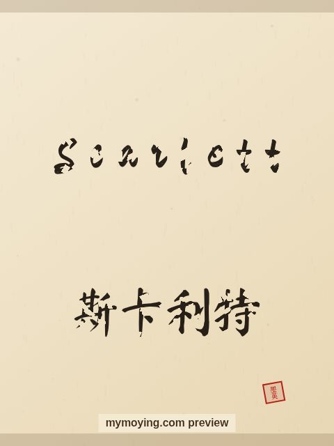

Scarlett in Chinese Calligraphy
A look at Scarlett in brush style, with the Chinese transliteration 斯卡利特 (Sī kǎ lì tè) and the meaning of the name.

Sample. “Scarlett” in the Regular (楷书) brush style with the Chinese name 斯卡利特 (Sī kǎ lì tè). The paid file removes the watermark.
The Chinese characters for Scarlett
As a transliteration, Scarlett is usually written 斯卡利特 (Sī kǎ lì tè). Each character is listed below with its own dictionary meaning — the name is chosen by sound, not by meaning, and Moying does not translate names. Please have a person review the characters before any permanent use such as a tattoo.
Origin and meaning
From English, Scarlett carries the meaning “red (a colour and surname)”.
About the name Scarlett
The heroine of Gone with the Wind, Scarlett O'Hara, gave the name its fire.
As a gift or a tattoo
People often order Scarlett as a framed gift or as a tattoo — the meaning, “red (a colour and surname)”, is part of the appeal.
Open Scarlett in the generatorFree watermarked preview. $1.99 once for a clean high-resolution download of this name in every style and setting. No subscription. Digital product, delivered instantly; see Terms.